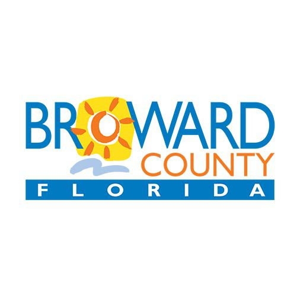

Broward County Resources
Hospitals & Clinics
Joe DiMaggio Children’s Hospital – Developmental/Neurology
Joe DiMaggio Children’s Hospital provides specialized care for children with medical and developmental needs. It features top pediatric programs and emphasizes family-centered care and holistic wellness.
Nicklaus Children’s Dan Marino Outpatient Center
The Dan Marino Center delivers comprehensive therapies and diagnostics for children with autism and developmental delays, with a multidisciplinary team approach for optimal outcomes.
Therapy Providers
Broward Children’s Center (BCC)
BCC offers medical, therapeutic, and educational support for children with special health needs, focusing on holistic and personalized care.
Arc Broward
Arc Broward empowers individuals with developmental disabilities through education, employment training, and inclusion-focused programs.
Diagnostic Centers
Children’s Diagnostic & Treatment Center (CDTC)
CDTC provides integrated healthcare, therapy, and social services for children with special healthcare needs, emphasizing early intervention and family-centered care.
Schools & Programs
NSU Baudhuin Preschool (Mailman Segal Center)
NSU’s Autism Institute offers education, therapy, and research to advance autism care and inclusion through evidence-based services.
South Florida Autism Charter School (SFACS)
SFACS provides structured, individualized education and therapy to help children with autism build academic and social skills.
After-School & Recreation
Broward County Parks – Special Populations Section
The Special Populations Program offers adaptive recreation, fitness, and social inclusion programs for individuals with disabilities.
Nonprofits & Support Groups
UM-NSU CARD (Center for Autism & Related Disabilities)
CARD provides lifelong, free services to families and professionals supporting individuals with autism across South Florida.
The Dan Marino Foundation
The Foundation promotes independence and employment for individuals with autism through technology-based learning and vocational training.